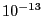
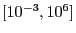

Next: Avoid hiding large coefficients Up: Tolerances and user-scaling Previous: Improving ranges for variables
In the previous sections, we presented some simple strategies to limit the ranges of variable bounds, constraint right-hand sides, objective values, and constraint matrix coefficients. However, it could happen that by scaling constraints or variables, some constraint coefficients become too small. Note that Gurobi will treat any constraint coefficient with absolute value under  as zero. Consider the following example:
We recommend that you scale the matrix coefficients so that their range is contained in six orders of magnitude or less, and hopefully within .